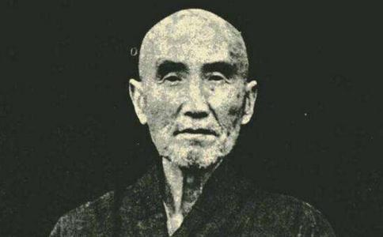

倓虚大师，在夏历癸卯年六月二十二日（即阳历一九六三年八月十一日星期日）香港夏令时间（比平时拨快一小时）下午六点十五分，圆寂于香港新界荃湾弘法精舍，享年八十九。翌日（二十三日）下午四时，由乐果老法师主持封龛典礼。从此，中兴
大师圆寂后，我接到海内外许多
倓虚大师，是在民国三十八年己丑（一九四九）三月间来香港的，那年大师正是七十五岁。记得六月初一，给大师贺七十五岁生辰时，为了赞颂大师功德，我还作了一个歌，请大师升座，我们同学站在面前唱，唱完了请大师
到了香港的第三年，（一九五一年辛卯）大师七十七岁，夏间，曾把腿部跌伤过一次，休养几个月。甲午年，（一九五四）大师八十岁，八月十二日请经完毕后，回到寮房即感不适，冷热交作，上吐下泻。
己亥年（一九五九年）大师八十五岁，十月间又病过一次。这两次病，都是前后经过三四个月，病情严重，都已到了弥留状态。
在未来香港之前，即民国三十三年（一九四四）大师七十岁时，也生过一场大病，病情严重的时侯，使到四众
但是，大师在此次大病之后，却有一种特殊灵感，说他可以活到九十岁，这话并不祇和一个人说起，这样说来，是大师在廿年前，已预知自己临终之期了。
再说这次临终的前后情形。
今年春间，大师经过数年之久，讲完一部
大师自己是懂中医的，尝对人说：“百病皆以痰作祟”，年纪大的人，痰多，而又饮食减少，并不是一种好现象，但大师除了觉得痰多，身上困惫之外，其他并无
大师为了方便接引市区的人，同时也为了讲经方便，免得经常来来去去的，因此这两三年，经常是住在中华佛教图书馆的时侯多。
旧历六月初一，是大师八十九岁寿辰，依俗例，今年就应该做迎寿祝贺九十岁诞辰。当然大师自己是不注意这些事的。早在去年，蔡念生
图书馆地方小，容人有限，弘法精舍地方宽敞，为了六月初一大师生辰时易于和大家见面，旧历五月廿八日，大师乃由图书馆回荃湾弘法精舍。（往年习惯上也是如此。）待九十迎寿生辰过去后，仍回图书馆。
在六月初一那天，起初，弟子们向大师作祝贺礼拜时，大师还可以趺坐应酬，后来连坐着也惑吃力了，于是作吉祥卧，躺在床上和大家见面，这是从来未有过的。
八十九岁生辰过后，算是晋入九十岁边了，大师仍回图书馆，息心调养。这时大师已是瘦骨嶙峋，体力日感不支，饮食日渐减少，每日只饮少许流质的东西。
八月三日（即夏历六月十四）请法国医院长，名西医吕桂滔医生来诊治，诊治的结果，据说：“大师五脏很好，什么病也没有，有之，即是“老”病，人老了，像一部机器，机件迟钝零散，不好使唤了。尤其心脏衰弱，加以这么大年纪，已不敢再予用针药。”
后来医生又补充说：“以大师这种病情，年纪大，而又不能进饮食，身体各部缺乏营养，久之如薪尽火灭，像一个房客，旧的房子坏了，要换一个新的了”。
门弟子们听到医生的话，大家也有了准备，于是将病情报告大师，大师说：“好！图书馆地方小，不方便，马上回荃湾弘法精舍吧，在精舍死了之后。别人来看看，也方便点，不然，死在图书馆，人来了挤不动，怪讨厌的。于是，八月五日（夏历六月十六日）下午回荃湾弘法精舍。
八月六日至十一日，大师体力日感不支，最初几天，还能坐起一会，吃几匙羹粥，以后连几匙羹粥也不能吃了。有时又涌出许多痰来，到这时不但身体全部缺少了营养，而且多日来内里的积蓄，全部吐出，脏腑内空洞到什么也没有了。
大师尝说：“人生如做戏，锣鼓一响，挑起帘来出台就唱戏唱完了，锣鼓一响就煞戏，人
“俗语常说：人生七十古来稀。现在我不但活到过了七十，而且过了八十到九十岁边缘了，还不该死吗？事实上多活这二十年已竟是赚的了。”
凡是和大师接近过的人，无论
大师在病中，祇是感到身体疲惫、气弱、胃纳呆、不思饮食，此外并无其他任何痛苦，唯一所感到烦恼的是大师自己随智，而弟子们却一味随情。
比如大师在港有不少出家在家的弟子，大师病了，就任其自然等死。但是，弟子们却想他老多住世几年，多接引几个众生，于是便从各方面设法进医药，今天这个弟子介绍中医来吃药，明天那个弟子又介西医来打针，这样药水，那样药水，凡是可以挽救大师病的方决都想到。这样一来，却引起大师许多不愉快，引以为痛苦。大师尝对侍侯的人说：
“你们大家一番好心，我很多谢，你们饶了我吧，不要再难为我了，如果我不该死，想叫我死也不可能，如果我该死了任何医药也救不了。我的病与阎王小鬼无分，我自己作得主，我已活了八九十年，出家几十年，难道自己还不会死，到了临死的时侯再叫医生来折磨死，那真是拿钱买罪受，何苦由来？”
有时弟子们勉强劝他老吃药打针时，大师便声色俱厉的呵斥曰：“你们再难为我，我便一头撞到墙上去撞死。你们如果是我的好同参道友，就谈我死的时侯痛痛快快的死，何必再打针受罪，喝那么多苦水。”
大光是在一九四九跟大师一同来香江的，到了香港之后，除了在华南
当大师病况严重的时候，我由南普陀去弘法精舍探视大师病，为了大师一生的历史，也为了
我说：“老法师！你老的病情似乎很严重，我们作弟子的都希望你老久住于世，万一不能的话，将来你老走的时候，要怎样走法？有没什么话吩咐，对以后的事，有没什么安排？”